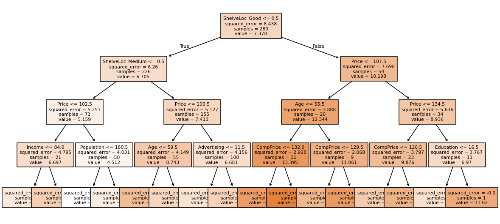
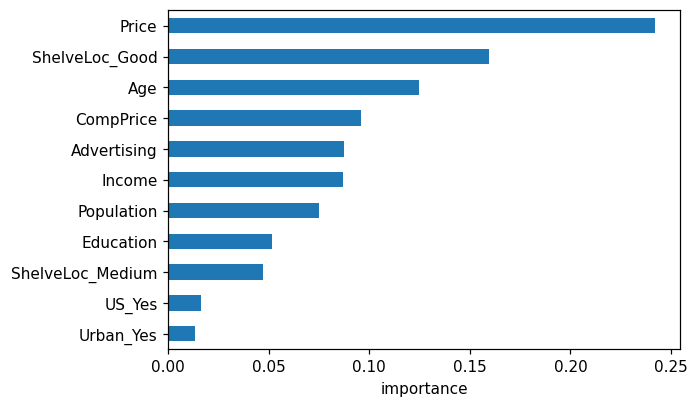
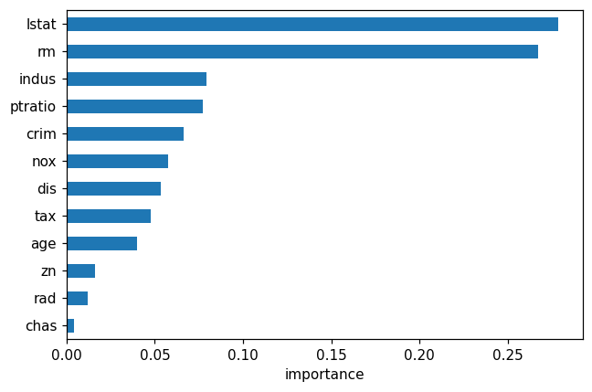

This notebook runs on Colab as-is. The badge link above and the GITHUB_RAW line in the setup cell already point to this repository, so everything installs and loads automatically.
Chapter 8 — Tree-Based Methods¶
Lab: trees, random forests, gradient boosting, XGBoost¶
Course: Quantitative Research Methods
Instructor: Prof. Dr. Christoph Weisser
Source: James, Witten, Hastie, Tibshirani & Taylor (2023), An Introduction to Statistical Learning, with Applications in Python, Springer. Companion code at statlearning.com.
Goal. Fit a single regression tree on Carseats, then bagging, random forests, and gradient boosting; compare test errors.
Setup¶
Run this cell once. The ISLP package can be installed with pip install ISLP. As an alternative, the same data sets are available as CSVs in the workspace’s ALL CSV FILES - 2nd Edition folder.
Google Colab: this notebook also runs on Colab out of the box — the setup cell below installs any missing packages and downloads the data automatically.
# --- Setup: runs locally AND on Google Colab --------------------------------
# Silence only the spurious 'encountered in matmul' RuntimeWarnings that the macOS
# Accelerate BLAS emits; real warnings (deprecations, model caveats) stay visible.
import warnings
warnings.filterwarnings('ignore', message='.*encountered in matmul', category=RuntimeWarning)
import importlib.util, os, subprocess, sys
IN_COLAB = 'google.colab' in sys.modules
def _ensure(pkg, import_name=None):
"""pip-install pkg (quietly) if its import is missing."""
if importlib.util.find_spec(import_name or pkg) is None:
subprocess.run([sys.executable, '-m', 'pip', 'install', '-q', pkg], check=False)
if IN_COLAB: # Colab ships numpy/pandas/sklearn/statsmodels; add course extras
for _pkg, _imp in [('ISLP', 'ISLP'), ('xgboost', 'xgboost')]:
_ensure(_pkg, _imp)
import numpy as np
import pandas as pd
import matplotlib.pyplot as plt
rng = np.random.default_rng(2024)
plt.rcParams['figure.dpi'] = 110
try:
from ISLP import load_data
HAVE_ISLP = True
except ImportError:
HAVE_ISLP = False
print('ISLP not installed; using CSV / URL fallbacks.')
# Local CSV location (repo layout first, then legacy paths, then a data/ cache).
_CANDIDATES = ['../ALL CSV FILES - 2nd Edition',
'ALL CSV FILES - 2nd Edition',
'../../ALL CSV FILES - 2nd Edition', 'data']
CSV = next((p for p in _CANDIDATES if os.path.isdir(p)), 'data')
# GITHUB_RAW lets a fresh Colab runtime fetch any
# CSV that is neither in ISLP nor already local (spaces in the folder -> %20).
GITHUB_RAW = ('https://raw.githubusercontent.com/ChrisW09/Quantitative-Research-Methods/main/'
'ALL%20CSV%20FILES%20-%202nd%20Edition')
# The four datasets NOT in the ISLP package -> load from the book's official
# site so the notebook works on a fresh Colab even before the repo is published.
KNOWN_URLS = {
'Advertising': 'https://www.statlearning.com/s/Advertising.csv',
'Heart': 'https://www.statlearning.com/s/Heart.csv',
'Income1': 'https://www.statlearning.com/s/Income1.csv',
'Income2': 'https://www.statlearning.com/s/Income2.csv',
}
def load(name, **read_csv_kwargs):
"""Load a course dataset. Order: ISLP package -> R datasets -> local CSV
-> official book URL -> your GitHub repo. Works locally and on Colab."""
if HAVE_ISLP:
try:
return load_data(name)
except Exception:
pass
if name == 'USArrests': # classic R dataset, not in ISLP
try:
import statsmodels.api as sm
return sm.datasets.get_rdataset('USArrests', 'datasets').data
except Exception:
pass
path = f'{CSV}/{name}.csv'
if os.path.exists(path): # running from the repo (local)
return pd.read_csv(path, **read_csv_kwargs)
remotes = ([KNOWN_URLS[name]] if name in KNOWN_URLS else []) + [f'{GITHUB_RAW}/{name}.csv']
for url in remotes: # fresh Colab: stream over https
try:
return pd.read_csv(url, **read_csv_kwargs)
except Exception:
continue
raise FileNotFoundError(
f"Could not load {name!r}. Put the CSV in '{CSV}/' or check your connection for the GITHUB_RAW fallback.")
1. The Carseats data¶
Sales of child car seats at 400 stores. get_dummies(..., drop_first=True) turns the three categorical columns into 0/1 indicators and drops one level of each as the reference — without drop_first the dummies for a variable sum to 1 and duplicate the intercept.
Trees do not need the predictors standardised: a split asks only “is \(X_j\) above this threshold?”, and that question is unchanged by rescaling. This is the one family in the course where the scaling step is genuinely unnecessary.
Carseats = load('Carseats')
X = pd.get_dummies(Carseats.drop(columns='Sales'), drop_first=True).astype(float)
y = Carseats['Sales']
from sklearn.model_selection import train_test_split
Xtr, Xte, ytr, yte = train_test_split(X, y, test_size=0.3, random_state=0)
print(X.shape)
(400, 11)
2. Single regression tree¶
max_depth=4 is a blunt cap, chosen to keep the tree readable rather than to make it accurate. Read the plot top-down: each box shows the splitting rule, the number of training cases reaching it, and the mean Sales predicted there — which is the prediction for every store in that leaf. ShelveLoc and Price should dominate the top splits, which is the tree recovering the two things a retailer already knows matter.
from sklearn.tree import DecisionTreeRegressor, plot_tree
tree = DecisionTreeRegressor(max_depth=4, random_state=0).fit(Xtr, ytr)
fig, ax = plt.subplots(figsize=(13, 6))
plot_tree(tree, feature_names=X.columns, filled=True, fontsize=7, ax=ax)
plt.show()

print('test MSE single tree:', ((yte - tree.predict(Xte))**2).mean().round(3))
test MSE single tree: 3.612
3. Pruning via cost-complexity¶
Cost-complexity pruning grows one large tree, then penalises it by the number of leaves \(|T|\):
Every \(\alpha\) picks out one subtree, so ten-fold CV over a grid of \(\alpha\) chooses how hard to prune. ccp_alpha=0 means no penalty at all.
from sklearn.model_selection import GridSearchCV
grid = GridSearchCV(DecisionTreeRegressor(random_state=0),
{'ccp_alpha': np.linspace(0, 0.05, 20)},
cv=10, scoring='neg_mean_squared_error').fit(Xtr, ytr)
print('best alpha :', round(grid.best_params_['ccp_alpha'], 4))
print('test MSE :', ((yte - grid.best_estimator_.predict(Xte))**2).mean().round(3))
best alpha : 0.0132
test MSE : 4.62
Reading the output. The pruned tree scores test MSE 4.62 against the depth-4 tree’s 3.612 — pruning made it worse. This is not a bug and it is worth dwelling on: \(\alpha\) was chosen by CV on the training folds, and max_depth=4 was already a strong regulariser, so CV pruned a tree that did not need pruning. On a single split of 400 stores the test MSE also carries real sampling noise. The lesson is the one the chapter builds towards — a single tree is a high-variance object, however you regularise it, which is exactly what the next two sections fix by averaging.
4. Random forest¶
Five hundred trees, each grown on a bootstrap resample, and — the part that makes it a forest rather than bagging — each split considers only max_features='sqrt' of the predictors. That restriction is the whole idea: bagged trees are highly correlated because every tree makes the same dominant first split, and averaging correlated things reduces variance far less than averaging independent ones.
oob_score=True is validation for free. Each observation is out of the bootstrap sample for about a third of the trees, so it can be predicted by exactly those trees without ever having been trained on.
from sklearn.ensemble import RandomForestRegressor
rf = RandomForestRegressor(n_estimators=500, max_features='sqrt',
random_state=0, oob_score=True).fit(Xtr, ytr)
print('OOB R^2 :', round(rf.oob_score_, 3))
print('test MSE :', ((yte - rf.predict(Xte))**2).mean().round(3))
OOB R^2 : 0.629
test MSE : 2.312
imp = pd.Series(rf.feature_importances_, index=X.columns).sort_values()
fig, ax = plt.subplots(figsize=(6, 4))
imp.plot.barh(ax=ax); ax.set_xlabel('importance'); plt.show()

5. Gradient boosting¶
The opposite strategy. A random forest grows deep trees in parallel and averages away their variance; boosting grows 2,000 shallow trees in sequence, each fitted to what the previous ones still get wrong, and adds each one scaled down by learning_rate=0.01.
Depth 3 is deliberate — each tree is a weak learner, and the slow learning rate is what keeps 2,000 of them from overfitting. Learning rate and n_estimators trade off directly: halve the rate and you need roughly twice the trees.
from sklearn.ensemble import GradientBoostingRegressor
gb = GradientBoostingRegressor(n_estimators=2000, learning_rate=0.01,
max_depth=3, random_state=0).fit(Xtr, ytr)
print('test MSE :', ((yte - gb.predict(Xte))**2).mean().round(3))
test MSE : 2.195
Optional: XGBoost¶
try:
import xgboost as xgb
bst = xgb.XGBRegressor(n_estimators=2000, learning_rate=0.05,
max_depth=4, subsample=0.8, random_state=0).fit(Xtr, ytr)
print('XGBoost test MSE :', ((yte - bst.predict(Xte))**2).mean().round(3))
except ImportError:
print('xgboost not installed; pip install xgboost')
XGBoost test MSE : 2.249
6. Why Gini and not classification error?¶
The deck’s Exercise 8.2 is done by hand: 800 cases, two candidate splits, and the claim that classification error cannot tell them apart while Gini can. It is short enough to check in code, and the result is the reason criterion defaults to an impurity measure rather than to accuracy.
For a node with positive proportion \(\hat p\):
and a split is scored by the average of its two regions, each weighted by its share of the cases.
def err(p): return 1 - max(p, 1 - p) # majority-vote misclassification rate
def gini(p): return 2 * p * (1 - p) # two-class Gini index
def score(regions, measure):
"""Weighted average of a purity measure over a split's regions [(n, p_hat), ...]."""
n_total = sum(n for n, _ in regions)
return sum(n / n_total * measure(p) for n, p in regions)
# Exercise 8.2: 800 cases, 600 positive overall.
split_1 = [(400, 300 / 400), (400, 300 / 400)] # two balanced, equally impure regions
split_2 = [(600, 200 / 600), (200, 200 / 200)] # one big impure region + one PURE region
for name, split in [('split 1', split_1), ('split 2', split_2)]:
print(f'{name}: error = {score(split, err):.3f} Gini = {score(split, gini):.3f}')
print('\nerror ranks them:', 'a tie' if np.isclose(score(split_1, err), score(split_2, err)) else 'differently')
print('Gini prefers: ', 'split 2' if score(split_2, gini) < score(split_1, gini) else 'split 1')
split 1: error = 0.250 Gini = 0.375
split 2: error = 0.250 Gini = 0.333
error ranks them: a tie
Gini prefers: split 2
Reading the output. Both splits score error 0.250 — the criterion is genuinely blind here. Gini gives 0.375 against 0.333 and prefers split 2, the one that produces a pure region. That purity is worth something even though it does not change a single majority-vote prediction: a pure node never needs splitting again and predicts with confidence.
Hence the division of labour in the chapter. Gini and cross-entropy grow the tree, because they reward purity gains that leave the majority vote unchanged; classification error is the right measure for judging the finished tree, which is what §3 pruned against.
7. The four models side by side¶
Every test MSE computed above, collected so the comparison is explicit rather than scattered across five cells.
pd.DataFrame({
'test MSE': [((yte - tree.predict(Xte)) ** 2).mean(),
((yte - grid.best_estimator_.predict(Xte)) ** 2).mean(),
((yte - rf.predict(Xte)) ** 2).mean(),
((yte - gb.predict(Xte)) ** 2).mean()],
}, index=['single tree (depth 4)', 'pruned by CV', 'random forest (500)',
'gradient boosting (2000)']).round(3)
| test MSE | |
|---|---|
| single tree (depth 4) | 3.612 |
| pruned by CV | 4.620 |
| random forest (500) | 2.312 |
| gradient boosting (2000) | 2.195 |
Reading the output. The ordering is the chapter’s argument in one table: a single tree is interpretable and mediocre, pruning does not rescue it, and both ensembles roughly halve the error — boosting narrowly ahead of the forest here. What was given up to get there is the picture in §2. Nobody reads 500 trees, which is why §4’s importance plot exists: it is the only interpretation an ensemble affords.
8. Exercises¶
Tune the random forest’s
max_features. What value wins on CV?Tune the gradient booster’s learning rate, depth, and
n_estimatorsjointly.Use permutation importance instead of impurity importance.
Replace Carseats with the OJ data and predict
Purchase. Report test accuracy.Redo §6 with cross-entropy, \(-\hat p\log\hat p - (1-\hat p)\log(1-\hat p)\). Does it agree with Gini on which split to prefer?
Lecture exercises — worked Python solutions¶
These are the [Python] exercises from the lecture slides, solved step by step; run them cell by cell. Data loads through the load() helper defined in the Setup cell, so every cell works locally and on Colab.
Exercise 8.7 — Random forest & boosting on Boston [Python]¶
Task (from the slides). Using the Boston data (target medv):
fit a random forest and a gradient-boosting regressor; report test MSE;
read off the most important features from the random forest;
interpret the result.
# (a) Load Boston and make a reproducible 70/30 train/test split -------------
from sklearn.ensemble import RandomForestRegressor, GradientBoostingRegressor
from sklearn.model_selection import train_test_split
from sklearn.metrics import mean_squared_error
Boston = load('Boston')
Boston = Boston.drop(columns=[c for c in ['Unnamed: 0'] if c in Boston.columns])
Xb = Boston.drop(columns='medv') # 12 predictors
yb = Boston['medv'] # median home value (in $1000s)
Xtr_b, Xte_b, ytr_b, yte_b = train_test_split(Xb, yb, test_size=0.3,
random_state=0)
print('train:', Xtr_b.shape, ' test:', Xte_b.shape) # (354, 12) / (152, 12)
train: (354, 12) test: (152, 12)
# Fit both ensembles and compare held-out test MSE ----------------------------
rf = RandomForestRegressor(n_estimators=500, max_features='sqrt', # B=500, m=sqrt(p)
random_state=0).fit(Xtr_b, ytr_b)
print('RF test MSE:',
round(mean_squared_error(yte_b, rf.predict(Xte_b)), 2)) # ~19.6
gb = GradientBoostingRegressor(n_estimators=1000, learning_rate=0.01, # slow learning
max_depth=3, random_state=0).fit(Xtr_b, ytr_b)
print('GBM test MSE:',
round(mean_squared_error(yte_b, gb.predict(Xte_b)), 2)) # ~13.5
RF test MSE: 19.65
GBM test MSE: 13.46
# (b) Random-forest variable importance ---------------------------------------
# feature_importances_ = total impurity (RSS) reduction per variable, summed
# over all splits of all 500 trees and normalised to sum to 1.
imp_b = pd.Series(rf.feature_importances_,
index=Xb.columns).sort_values(ascending=False)
print(imp_b.round(3).head()) # lstat ~0.28 and rm ~0.27 dominate
imp_b.sort_values().plot.barh(figsize=(6, 4))
plt.xlabel('importance'); plt.tight_layout(); plt.show()
lstat 0.279
rm 0.267
indus 0.079
ptratio 0.077
crim 0.066
dtype: float64

(c) What the output shows. Both ensembles land far below a single unpruned tree (test MSE ≈ 27 on this split): boosting reaches ≈ 13.5 and the m=√p forest ≈ 19.6. Boston has a few dominant predictors, so restricting each split to √12 ≈ 3 candidate features hurts the forest on this particular split — Extended Exercise 8.3 below shows that a larger max_features closes the gap. The importance ranking is headed by lstat (% lower-status population, ≈ 0.28) and rm (average rooms per dwelling, ≈ 0.27): housing value is driven mostly by neighbourhood socio-economic status and dwelling size.
Extended Exercise 8.3 — Bagging vs. forest vs. boosting [Python]¶
Task (from the slides). Using Boston (target medv), fit and compare three ensembles against a single tree:
bagging (a forest that considers all p predictors at each split);
a random forest, tuning m = features tried per split;
gradient boosting, tuning (B, λ, d) = (trees, learning rate, depth).
Report the test MSE of each, and read off the random-forest variable-importance ranking. Which method wins, and which predictors matter?
# (1) Single deep tree vs. bagging (fresh split, seed 1 as in the lecture) ---
from sklearn.tree import DecisionTreeRegressor
p = Xb.shape[1] # p = 12
Xtr8, Xte8, ytr8, yte8 = train_test_split(Xb, yb, test_size=0.3,
random_state=1)
tree8 = DecisionTreeRegressor(random_state=1).fit(Xtr8, ytr8) # unpruned tree
bag8 = RandomForestRegressor(n_estimators=500, max_features=p, # m = p -> bagging
random_state=1).fit(Xtr8, ytr8)
print('single tree test MSE:',
round(mean_squared_error(yte8, tree8.predict(Xte8)), 2)) # ~26.7
print('bagging test MSE:',
round(mean_squared_error(yte8, bag8.predict(Xte8)), 2)) # ~8.5
# Averaging 500 bootstrap trees removes most of the single tree's error -- though
# this tree seed flatters the ensemble; see the discussion at the end.
single tree test MSE: 26.67
bagging test MSE: 8.56
# (2) Random forest: tune m = max_features (candidates per split) -------------
# Choose m by 5-fold CV *inside the training set*; picking the m with the
# smallest TEST MSE would make the test set part of the fitting process and the
# reported error optimistic. The test set is scored once, for the winner only.
from sklearn.model_selection import GridSearchCV
rf_cv = GridSearchCV(RandomForestRegressor(n_estimators=500, random_state=1),
{'max_features': ['sqrt', 4, 6]},
cv=5, scoring='neg_mean_squared_error').fit(Xtr8, ytr8)
for m, s in zip(rf_cv.cv_results_['param_max_features'],
-rf_cv.cv_results_['mean_test_score']):
print(f'RF max_features={str(m):>4}: CV MSE = {s:.2f}')
# Expected: sqrt ~13.2, 4 ~12.5, 6 ~11.9 -> a larger m helps on Boston because
# its few strong predictors (lstat, rm) should be available at most splits.
rf8 = rf_cv.best_estimator_ # already re-fit on all of Xtr8
print('chosen m :', rf_cv.best_params_['max_features'],
'-> test MSE =', round(mean_squared_error(yte8, rf8.predict(Xte8)), 2)) # 6 -> ~8.7
RF max_features=sqrt: CV MSE = 13.24
RF max_features= 4: CV MSE = 12.52
RF max_features= 6: CV MSE = 11.91
chosen m : 6 -> test MSE = 8.73
# (3) Gradient boosting: tune (learning rate, number of trees, depth) ---------
# Same rule as above: the winning setting is chosen on training-set CV, and only
# that one model is then scored on the test set.
gbm_grid = [{'learning_rate': [0.1], 'n_estimators': [1000], 'max_depth': [2]},
{'learning_rate': [0.01], 'n_estimators': [2000], 'max_depth': [3]}]
gbm_cv = GridSearchCV(GradientBoostingRegressor(random_state=1), gbm_grid,
cv=5, scoring='neg_mean_squared_error').fit(Xtr8, ytr8)
for prm, s in zip(gbm_cv.cv_results_['params'],
-gbm_cv.cv_results_['mean_test_score']):
print(f"GBM lr={prm['learning_rate']}, B={prm['n_estimators']}, "
f"depth={prm['max_depth']}: CV MSE = {s:.2f}")
# Expected: (0.1, 1000, 2) ~15.8 and (0.01, 2000, 3) ~10.9
# -> slow learning with many trees wins.
gbm8 = gbm_cv.best_estimator_
print('chosen :', gbm_cv.best_params_)
print('test MSE :', round(mean_squared_error(yte8, gbm8.predict(Xte8)), 2)) # ~7.3
GBM lr=0.1, B=1000, depth=2: CV MSE = 15.78
GBM lr=0.01, B=2000, depth=3: CV MSE = 10.92
chosen : {'learning_rate': 0.01, 'max_depth': 3, 'n_estimators': 2000}
test MSE : 7.34
# Variable importance of the tuned (max_features=6) forest --------------------
imp8 = pd.Series(rf8.feature_importances_,
index=Xb.columns).sort_values(ascending=False)
print(imp8.round(3).head())
# lstat (~0.40) and rm (~0.27) dominate, then dis and nox.
# (Magnitudes shift slightly across sklearn versions; the ranking is stable.)
lstat 0.400
rm 0.270
dis 0.069
nox 0.054
crim 0.052
dtype: float64
What the numbers say. On this split (seed 1): single tree ≈ 26.7 → bagging ≈ 8.6. For the forest, 5-fold CV inside the training set prefers m = 6 (CV MSE ≈ 11.9, against ≈ 13.2 at m=√p), and that chosen model then scores ≈ 8.7 on the test set; boosting’s CV likewise prefers slow learning (λ=0.01, B=2000, d=3: CV MSE ≈ 10.9 against ≈ 15.8), reaching ≈ 7.3 on test — so well-tuned boosting wins. Note where the hyperparameters were chosen: comparing test MSEs to pick m or (λ, B, d) would make the test set part of the fitting process, so selection runs on training-set CV and the test set is scored once per method. The realistic gain from ensembling here is about two-fold, not the three-fold ratio the printed numbers suggest — a fully grown single tree is by far the noisiest model in the comparison, and random_state=1 happens to grow one of its worse trees on this split, so other tree seeds and newer scikit-learn versions put the single tree well below 26.7 while every ensemble number barely budges. Because Boston has few, strong predictors, a larger m helps the forest — which is why plain bagging (m=p) is competitive here. The importance ranking (lstat, rm, then dis, nox) says housing value is driven mostly by neighbourhood socio-economic status and dwelling size. Boosting needs tuning; the random forest remains the strong low-effort default.